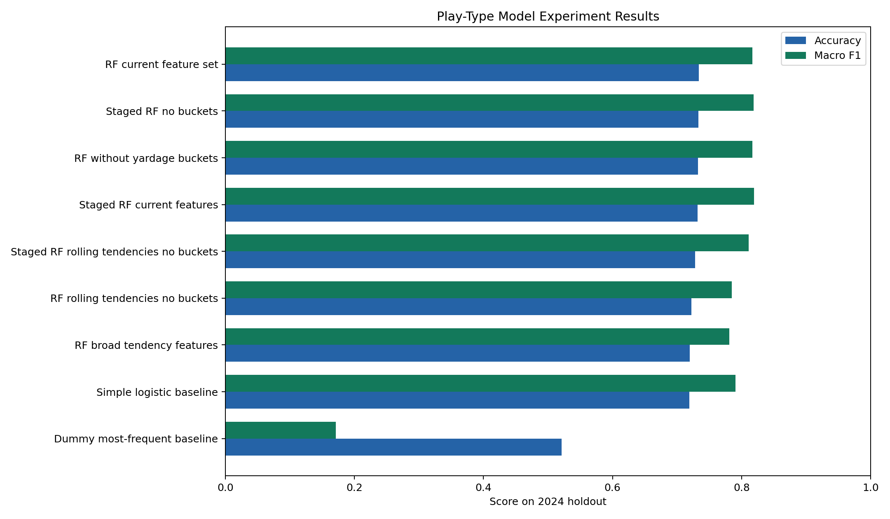
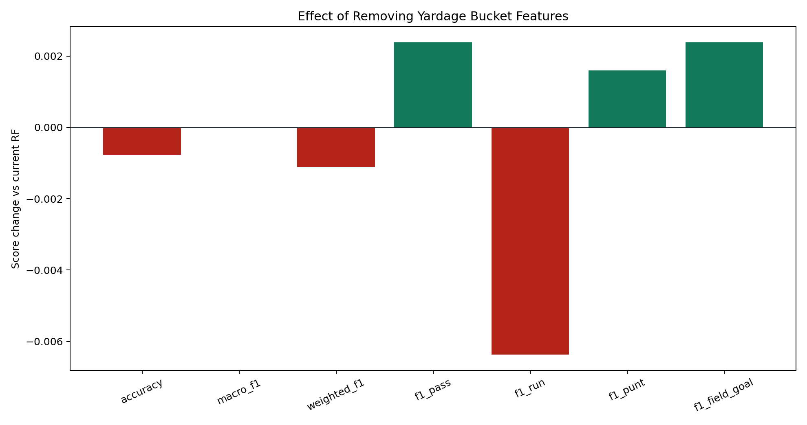
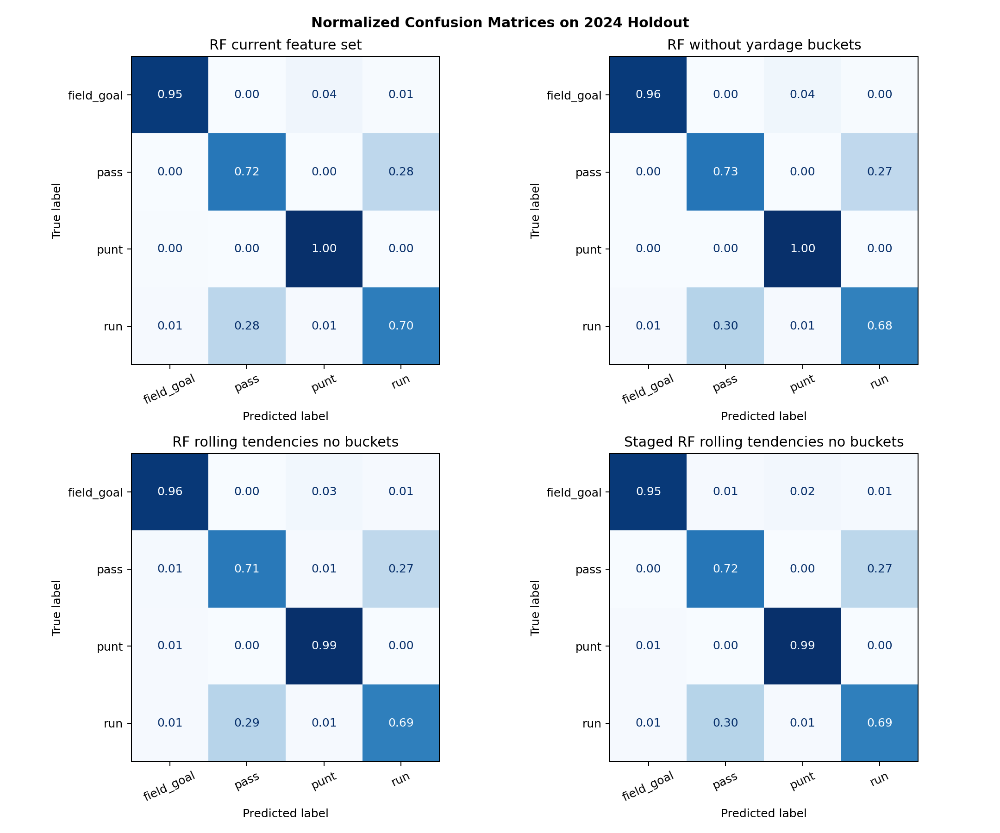
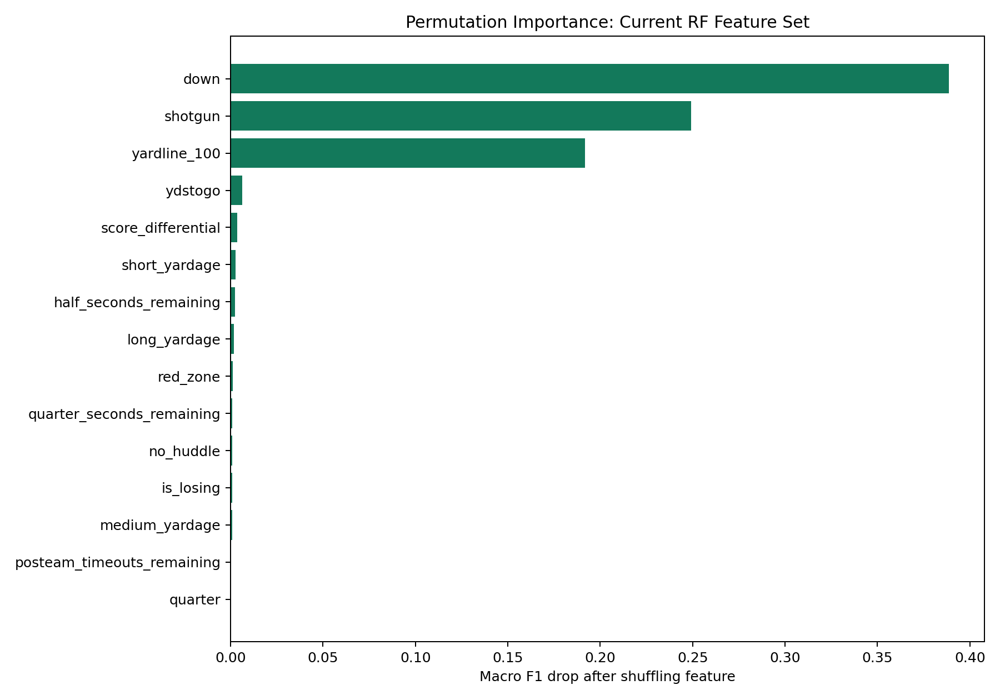

Headline
The experiment compares the current random forest feature set, a no-yardage-bucket ablation, a tendency-feature variant, a staged random forest, and simple baselines on a true 2024 holdout.
Metric Summary
| Experiment | Accuracy | Macro F1 | Weighted F1 | Pass F1 | Run F1 | Punt F1 | FG F1 |
|---|---|---|---|---|---|---|---|
| Staged RF current features | 0.7317 | 0.8192 | 0.7320 | 0.7405 | 0.6770 | 0.9533 | 0.9061 |
| Staged RF no buckets | 0.7329 | 0.8185 | 0.7330 | 0.7437 | 0.6758 | 0.9527 | 0.9017 |
| RF current feature set | 0.7335 | 0.8164 | 0.7335 | 0.7442 | 0.6772 | 0.9496 | 0.8947 |
| RF without yardage buckets | 0.7327 | 0.8164 | 0.7324 | 0.7466 | 0.6709 | 0.9512 | 0.8971 |
| Staged RF rolling tendencies no buckets | 0.7278 | 0.8109 | 0.7277 | 0.7399 | 0.6693 | 0.9455 | 0.8889 |
| Simple logistic baseline | 0.7192 | 0.7902 | 0.7195 | 0.7302 | 0.6661 | 0.9578 | 0.8068 |
| RF rolling tendencies no buckets | 0.7224 | 0.7851 | 0.7217 | 0.7345 | 0.6709 | 0.9126 | 0.8223 |
| RF broad tendency features | 0.7195 | 0.7811 | 0.7190 | 0.7256 | 0.6772 | 0.9051 | 0.8166 |
| Dummy most-frequent baseline | 0.5212 | 0.1713 | 0.3571 | 0.6852 | 0.0000 | 0.0000 | 0.0000 |
Accuracy and F1

Removing Yardage Buckets
This isolates what happens when short_yardage, medium_yardage, and long_yardage are removed while raw ydstogo remains.

Confusion Matrices

Permutation Importance
Permutation importance measures how much macro F1 drops when one feature is shuffled in the holdout set.
| Feature | Macro F1 Drop |
|---|---|
| down | 0.3885 |
| shotgun | 0.2491 |
| yardline_100 | 0.1917 |
| ydstogo | 0.0064 |
| score_differential | 0.0037 |
| short_yardage | 0.0026 |
| half_seconds_remaining | 0.0023 |
| long_yardage | 0.0017 |
| red_zone | 0.0013 |
| quarter_seconds_remaining | 0.0010 |
| no_huddle | 0.0009 |
| is_losing | 0.0008 |

Stored Inference Feature Verification
The experiment recomputed these features from raw columns. This table shows what is currently stored in the SQLite DB before code fixes/backfill.
| Feature | Mismatches | Mismatch Rate | Stored Unique Sample |
|---|---|---|---|
| red_zone | 0 | 0.0% | 0, 1 |
| clock_pressure | 0 | 0.0% | 0, 1 |
| short_yardage | 0 | 0.0% | 0, 1 |
| medium_yardage | 0 | 0.0% | 0, 1 |
| long_yardage | 0 | 0.0% | 0, 1 |
| is_losing | 0 | 0.0% | 0, 1 |
| late_game | 0 | 0.0% | 0, 1 |
| quarter_half | 0 | 0.0% | 0, 1 |
| season | 0 | 0.0% | 2020, 2021, 2022, 2023, 2024, 2025 |
| posteam_type | 0 | 0.0% | away, home |
| defteam | 0 | 0.0% | ARI, ATL, BAL, BUF, CAR, CHI |